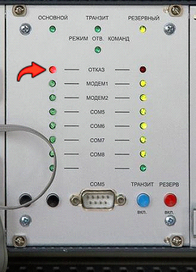

2. Нет перехода на «Основной» комплект
Не загружается процессорный модуль СРС «Основного» комплекта, горит на передней панеле красный светодиод «Отказ». Попробуйте перезагрузить процессорный модуль СРС, отключив и включив питание на МИП. Если это не помогло, то:
2.2. Возможно неисправен модуль СРС
Заменить модуль СРС
Светодиодная индикация панели БМ
